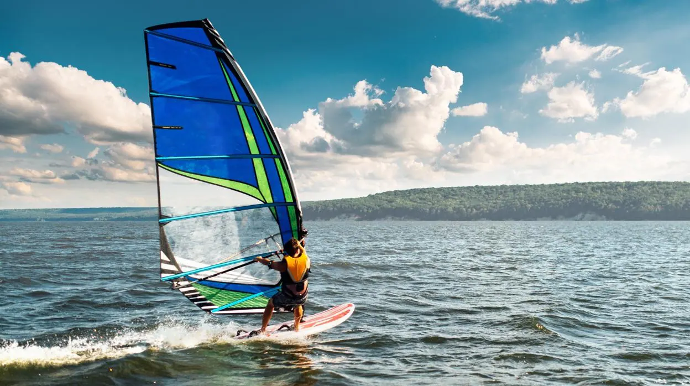
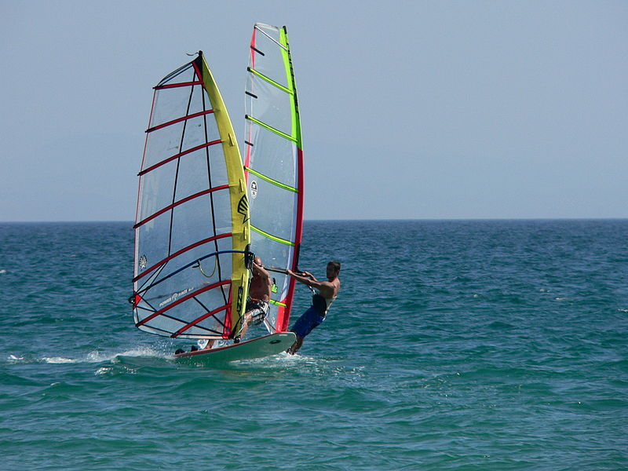
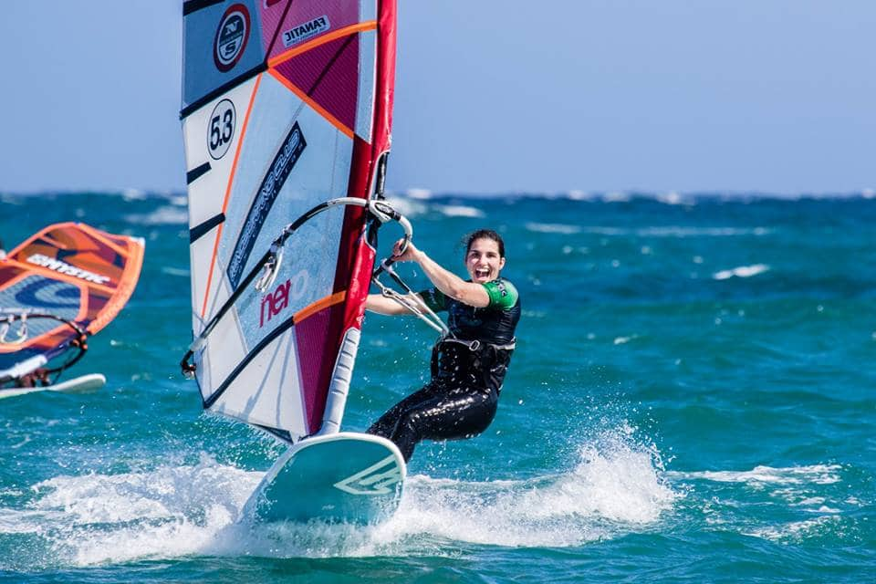

  
La tablavela, tabla vela, tabla-vela o tabla a vela,1 comúnmente llamada por los anglicismos windsurf o windsurfing, es una modalidad del deporte a vela que consiste en desplazarse sobre el agua con una tabla y una vela.
La Professional Windsurfers Association, más conocida por su acrónimo PWA, es el ente rector a nivel internacional en la práctica de la tablavela. Está formada por los mejores tablavelistas del mundo y representan el deporte al más alto nivel de competencia, uno de sus principales objetivos es garantizar el buen desarrollo del deporte, organizar y supervisar los eventos profesionales, hacer nuevas reglas para el deporte, ayudar a promover el crecimiento de base, fortalecer los lazos de amistad entre las asociaciones existentes, clases y disciplinas de la tablavela y de proporcionar apoyo y servicios para todos los amantes de la tablavela.
En la tablavela hay seis variantes de competición:
La de olas que se trata de una disciplina en la que se realizan saltos y se surfean las olas. Se necesita un equipo más ligero, asimismo, para este estilo se necesita bastante viento y olas de al menos 1 metro.
La de estilo libre, una que ha tenido mucha acogida estos últimos años. Hay dos tipos de estilo libre, el antiguo u old school y el moderno o new school. El antiguo consiste en hacer maniobras en poco viento, con la tabla y la vela. El moderno se practica con tablas cortas, livianas y anchas y con velas de 4 a 6 metros cuadrados. En el estilo libre moderno se hacen maniobras rápidas al mismo tiempo que uno va saltando, rotando y deslizando. Usualmente, se practica en condiciones de buen viento y superficies planas. La versión moderna de esta modalidad, la más joven de todas en tener disciplina propia en competición, ha tenido una rápida expansión en los últimos años. Permite hacer trucos espectaculares sin la necesidad de tener olas que surfear o con las que saltar.
La de estilo libre, una que ha tenido mucha acogida estos últimos años. Hay dos tipos de estilo libre, el antiguo u old school y el moderno o new school. El antiguo consiste en hacer maniobras en poco viento, con la tabla y la vela. El moderno se practica con tablas cortas, livianas y anchas y con velas de 4 a 6 metros cuadrados. En el estilo libre moderno se hacen maniobras rápidas al mismo tiempo que uno va saltando, rotando y deslizando. Usualmente, se practica en condiciones de buen viento y superficies planas. La versión moderna de esta modalidad, la más joven de todas en tener disciplina propia en competición, ha tenido una rápida expansión en los últimos años. Permite hacer trucos espectaculares sin la necesidad de tener olas que surfear o con las que saltar.
La de regata que es una carrera en la que las boyas están colocadas de forma que se sube al viento "ciñendo" y después se baja en popa o haciendo largos, dando varias vueltas al recorrido, de forma similar al resto de barcos de vela, para este tipo de regatas se han utilizado diferentes tipos de tablas de tablavela. La vela de la clase que mide 9,5 metros cuadrados y en mujeres 8,5 metros cuadrados, botavara y mástil 100 % de fibra de carbón y la tabla mide 286 cm de largo y 93 de ancho máximo de esta tiene 220 litros. En otros campeonatos, la fórmula tablavelista clase en la que las velas llegan hasta 12,5 metros cuadrados mientras que el mástil y la botavara pueden ser de 100 % de fibra de carbón la tabla tiene un largo de 228 cm y de ancho 100,5 cm y una capacidad de 160 a 168 litros aproximados. Después la fórmula experience que ha tenido un incremento en la flota de tablavelistas increíble ya que se considera la Fórmula barata porque limitan el equipo, la vela máximo de 11 metros cuadrados con solo tres cambers, el mástil solo puede ser de 75 % de fibra de carbono, la botavara es de aluminio y la tabla es de 100,5 cm de ancho y 228 cm largo y su capacidad es de 160 litros. A diferencia del eslalon, la fórmula se puede practicar en vientos desde los 6 nudos en caso de fórmula tablavelista o de 9 nudos en caso de fórmula experience hasta los 30 nudos. Como clase a esta modalidad también se la puede llamar race.
La de interior ha sido durante más de quince años en uno de los aspectos más emocionantes y comercializables del Tour Mundial. Desde 1990, ha habido concursos de interior en las grandes ciudades como París, Londres, Milán, Fráncfort, Marsella y Madrid, un espectáculo magnífico que está garantizado para emocionar a las multitudes que acuden a verlo.Dentro de la propia disciplina interior, hay tres disciplinas separadas. En slalom, donde por una inclinada rampa de partida, se intenta caer al agua y seguir manteniendo el control de la tabla. A continuación, una regata que hace un circuito corto en forma de ocho por las limitaciones espaciales de los espacios interiores. Los tablavelistas de estilo libre saltan y realizan sus mejores maniobras, y son entonces valoradas al instante por los jueces para decidir un ganador. El salto es la disciplina más impresionante en interior. Los tablavelistas alcanzan velocidad, antes de lanzarse sobre la rampa de salto en acrobacias típicas de otras modalidades como la de estilo libre o la de olas, en esta prueba es valorada la maniobra en sí, la precisión y control del aterrizaje e incluso la mejor caída.
La de super X, que es una nueva disciplina de la tablavela, desarrollada por la PWA en 2003, pero fue retirada entre 2008 y 2009. Todos los aspectos de la competición de las regatas y el slalom se combinan con los aspectos espectaculares del estilo libre para crear una nueva e impresionante disciplina, donde solo el verdadero todo terreno puede ganar. El circuito de super X consiste en una carrera de slalom a favor del viento interrumpido por grandes obstáculos flotantes que los competidores deben saltar por encima antes de realizar movimientos de estilo libre obligatorias en puntos específicos del circuito. El ritmo es rápido y frenético siendo complicado saber quien puede ganar hasta el último momento, por lo que super X la forma más emocionante de las carreras sobre una tabla de tablavela.